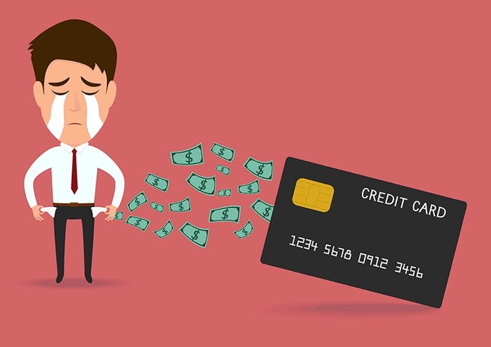

Connecticut finally made financial literacy mandatory for the Class of 2027 and onward. But what about everyone who came before?
Connecticut has finally made financial literacy mandatory for the Class of 2027 and onward. However, for the generation of South Windsor and Connecticut high school graduates left behind, the damage may already be done. An entire generation is already navigating debt, credit, and financial decisions nobody prepared them for. Connecticut and South Windsor need to step up where the law fell short before.
Think about it, a teenager walks across a graduation stage, diploma in hand, ready for adulthood. Within months, they sign up for a credit card, take out a student loan, pay rent for the first time. But nobody ever taught them how money actually works.

The reality for millions of graduates never taught how money works.
In 2023, Connecticut became the 21st state to require a personal finance course for high school graduation. Governor Ned Lamont signed Senate Bill 1165 into law, making a half-credit course in personal financial management mandatory starting with the Class of 2027.
The course covers banking, investing, savings, credit cards, and budgeting. Notably, South Windsor's own Representative Tom Delnicki was among the local lawmakers who supported this legislation.
CT passes Senate Bill 1165. Financial literacy becomes a graduation requirement.
Schools begin implementing curriculum. Teachers receive training and resources from the CT Department of Education.
First graduating class required to have completed the course. The law takes full effect.
Every graduating class before this received no guaranteed financial literacy education, including most current young adults in South Windsor today.
Research from economists Annamaria Lusardi and Olivia Mitchell in the Journal of Economic Literature shows that individuals with higher financial literacy are significantly more likely to plan for retirement, avoid high-interest debt, and build wealth over time. Those without it often learn through costly mistakes.
The OECD PISA Financial Literacy results show that students from lower-income families consistently score lower in financial literacy, proving that access to financial knowledge is closely tied to opportunity. Without a school requirement, financial education was left to chance; and for many South Windsor graduates, that chance never came.
According to a study by Lewis Mandell and Linda Schmid Klein, even students who did take personal finance courses in high school did not always show significant improvement in financial habits. This tells us that the quality and consistency of financial education matters just as much as its existence something South Windsor must keep in mind as it implements the new requirement.
To understand how this issue plays out locally, I reached out to a Junior at Northeastern who is a financial intern at Webster Bank in southington. Below is a summary of our conversation.
In my experience, most young adults who come in know the basics like having a checking account, but when it comes to things like credit scores, interest rates, or even just budgeting, there is a real gap. A lot of them are learning these things for the first time when they are already in a situation where it matters, which is not ideal.
Honestly, the biggest thing I see is young people not understanding how credit card interest works, they'll swipe for everything and then only pay the minimum, not realizing how fast that balance grows. The other one is just not having any savings at all, like even a small emergency completely throws them off financially.
"I think the biggest thing is making free financial resources more accessible and actually advertising them, because most people do not even know they exist. Banks, libraries, and community centers should be doing more outreach to young adults who missed out on this education, whether that is free workshops, one on one consultations, or even just online resources that are easy to find.
I have seen people come in stressed and confused about why their credit score dropped or why they owe so much more than they originally borrowed, and it is clear they just never had anyone explain how these things work. It puts people in really tough spots that could have been avoided with just some basic knowledge upfront.
One semester is definitely a good start and better than nothing, but I do not think it is enough to fully prepare someone for everything they will face financially as an adult. There is so much to cover between credit, taxes, investing, and budgeting that one semester really only scratches the surface.
Compound interest is the one thing I wish every graduating senior understood, because it works both for you and against you. If you are saving and investing early it builds your wealth over time, but if you are carrying credit card debt it is exactly why that balance never seems to go down no matter how much you pay.
I was not fully aware of all the details around it, but hearing that makes me really happy because it is honestly long overdue. I just hope the courses are taught in a way that is actually engaging and practical, because there is a big difference between sitting through a class and actually walking away knowing how to manage your money.
Whether you're a student, a recent graduate, or a parent it is never too late to start learning. Here are some practical first steps.
Learn what a credit score is, how it's affected, and why it matters for renting, buying a car, or getting a loan.
Start building an emergency fund. Even saving $20 a week adds up to over $1,000 in a year. You can also open a high-yield savings account rather than letting your money stay in a checking account.
Track what comes in and what goes out. Free tools like Mint or a simple spreadsheet can help you see where your money goes.
Resources like Khan Academy, Next Gen Personal Finance, Youtube, and local library programs offer free financial education for all ages.
When you start earning more, it's tempting to spend more. Learning to keep your expenses steady as your income grows is important for avoiding unnecessary debt and growing your wealth over time.
Free apps like YNAB or your bank's app can show you exactly where your money goes every month, which can help change your habits. Tracking spending and savings every month can help you be aware of your own financial situation.
This TEDx Talk by Sirisha Kuchimanchi is one of the sources referenced in this project that breaks down how to make financial literacy approachable, especially for younger generations. So for the adults viewing this website, looking to teach your kids financial literacy, this might be a good source to refrence too.
Kuchimanchi, Sirisha. "Teaching your kids financial literacy? Make it fun." TEDxCapeMay, 23 Apr. 2024.